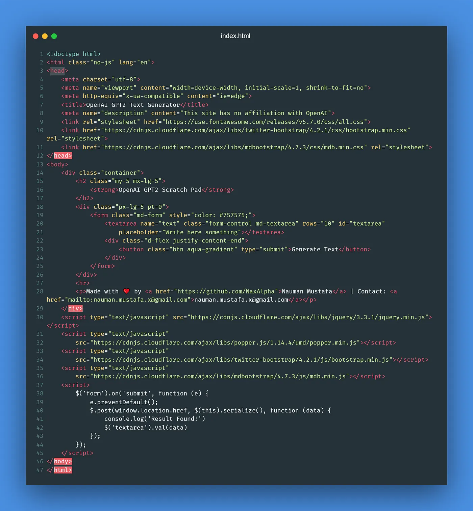
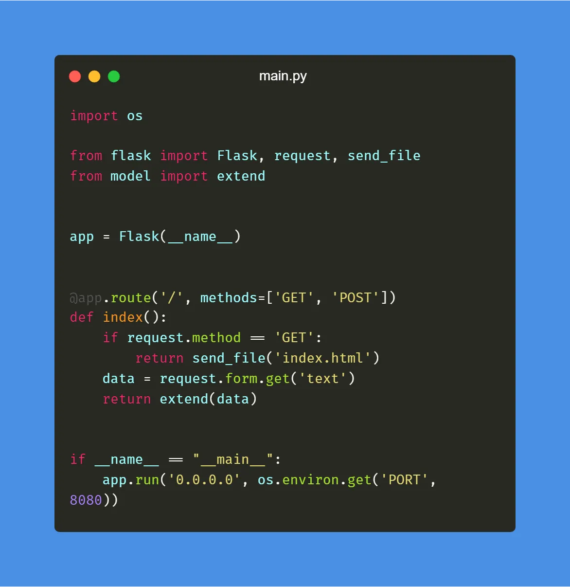
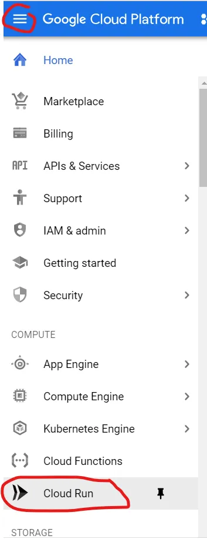
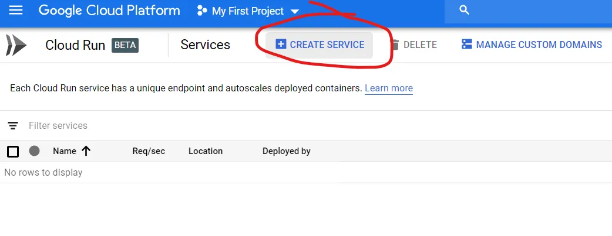

You are a hobbyist Machine Learning developer. You come across tons of exciting news related to artificial intelligence. You followed online tutorials and built something cool. Next, you want to show your creation to the world.
If you have been in this situation, you know there are very less number of options available to you. But this might change in the future. Because Google recently announced changes to its cloud platform.
Cloud Run is the Game Changer
Cloud Run is one of the most exciting additions to its platform. In this article, we will deploy an open source pre-trained deep learning model on Cloud Run.
Getting Started with Google Cloud
If you do not have an active Google Cloud account, you can sign up here. If you are a new user, you will get 300$ free credits for one year. Once ready you can start Cloud Shell.
Start Cloud Shell From Top Right Icon
For the sake of this tutorial, we will use existing deep learning project from GitHub and deploy it to Cloud Run. I created a sample project which uses HuggingFace's Pytorch implementation of GPT-2.
Into The Code
If you want to deploy to Cloud Run, you can skip this section. Otherwise, you can stick here and see the code in action. index.html contains user interface code.
Minimal Web User Interface for GPT-2
In model.py, I have implemented the logic to extend text using GPT-2 model.

Load and Test Model by Extending Simple Text Phrase
And finally, create a flask server to serve requests (in main.py):
Web Server Code: For User Interface and API to Do the Fun Stuff
Requirements
You can test it by first installing the following requirements:
- Pytorch (CPU version will work just fine)
- transformers
- flask
Once ready, you can start the server by: python main.py
Containerizing with Docker
Next, we need to build a Docker image for our project. So that we can deploy it to Cloud Run. I have created the following Dockerfile which uses python:3 as a base image, installs dependencies and runs our server.

Dockerfile to Deploy to Cloud Run
Building in Cloud Shell
You can build docker image locally on your system and then push it to Google Cloud. But if you have slow internet, it can take quite some time. So for this step, we will use Cloud Shell.
You will need your project ID for the following steps. To see your project ID in Cloud Shell, use the following command:
gcloud config list --format 'value(core.project)' 2>/dev/null
Docker Setup Steps
Follow these steps to setup docker image: (make sure to replace [PROJECT_ID] with your cloud project ID.)
Clone Repository
git clone https://github.com/NaxAlpha/gpt-2xy
Go to Source Directory
cd gpt-2xy
Build Docker Image
docker build -t gcr.io/[PROJECT_ID]/gpt-2xy .
Configure Docker for Google Cloud
gcloud auth configure-docker
Push Image
docker push gcr.io/[PROJECT_ID]/gpt-2xy
And you are all set!
Deploying to Cloud Run
From the top left icon, go to Cloud Run page
Navigate to Cloud Run from the Google Cloud Console
Then click on create service:
Click Create Service to start deployment
Important Configuration
Do not forget to enable Allow unauthenticated invocations. And then click on Show Optional Settings.
Next change Memory to 2GB and other settings as following (it is also recommended to set CPUs to 2 which will make it faster):

Configure memory, CPU, and other optional settings
Deployment Process
Click Create and it will take some time, once done you are ready to go.
Custom Domain (Optional)
You can also use domain/subdomain mapping. I have deployed my own version here: https://gpt2.ai-demo.xyz/ and here is a sample (Edit May 2025: Since it is a pretty old project, I have taken it down. You can still use the code to deploy your own version).
I just typed "Recently, tech giants" and rest is written by AI
Conclusion
I hope you enjoyed this tutorial. You can get the full source code here. Let me know if I have any feedback related to my article. Also, stay tuned for future tutorials.
Update (19-07-2020)
Many people reported issues with docker build so I updated the repo to latest version. If you want to skip building docker image, you can use pre built docker image from here. And use the following commands in Google Cloud shell to get your image ready:

Commands to use the prebuilt docker image
Responses (1)
docker pull docker.pkg.github.com/naxalpha/gpt-2xy/gpt-2xy:latestdocker tag docker.pkg.github.com/naxalpha/gpt-2xy/gpt-2xy:latest gcr.io/[YOUR-PROJECT]/gpt-2xydocker push gcr.io/[YOUR-PROJECT]/gpt-2xy